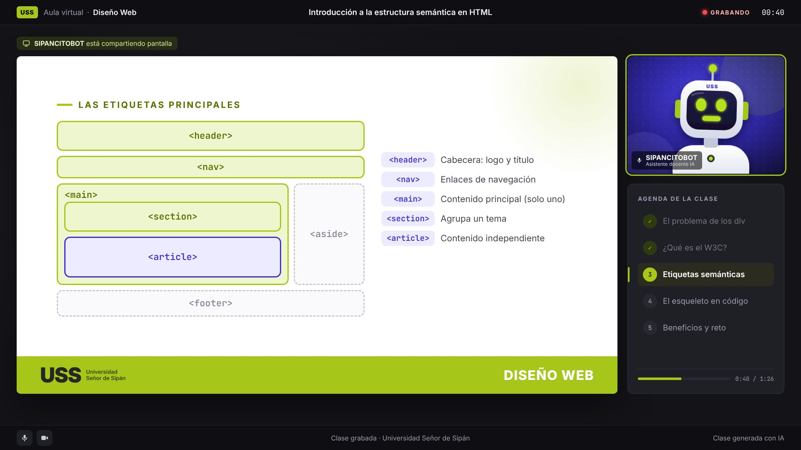
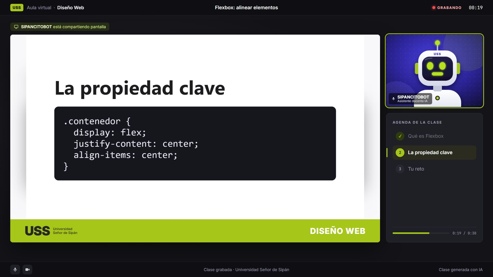

El sistema produce clases en video de 2 a 3 minutos con aspecto de clase por Zoom: láminas, un avatar docente (SIPANCITOBOT) y voz generada con IA. Esta versión agrega opciones sin costo: voz gratuita en la PC del estudio, IA gratuita que lee las láminas del docente y guardado automático de cada video en la carpeta compartida de Google Drive del equipo, ordenado por mes, curso, tipo de lámina y módulo.


| Herramienta | Para qué sirve | Mensual | En soles |
|---|---|---|---|
| Voz del avatar | |||
| Piper Gratis | Voz local en la PC del estudio: sin internet, sin cuenta y sin límite de videos. Uso libre (licencia MIT / Apache-2.0). Suena sintética, aunque mejor que la voz de Windows. | US$ 0 | S/ 0 |
| Azure Speech Gratis F0 | Voces neurales con acento de Perú (Camila, Alex). 0,5 millones de caracteres gratis al mes (≈ 240 clases); después ≈ US$ 16 por millón (≈ US$ 0,03 por clase). | US$ 0 | S/ 0 |
| ElevenLabs Starter | La voz más natural y clonación de la voz del docente. Licencia comercial. 30 000 créditos/mes (≈ 14 clases). | US$ 6 1.er mes US$ 1 | S/ 21 |
| ElevenLabs Creator | Igual, con 121 000 créditos/mes (≈ 58 clases) y clonación profesional (más fiel). | US$ 22 1.er mes US$ 11 | S/ 76 |
| IA que escribe el guion y lee las láminas | |||
| Groq o Gemini Gratis | Modelos gratuitos que escriben el guion y leen imágenes (Groq: qwen3.8-27b; Gemini: 3.8 Flash). Tienen límites por minuto y por día. En la capa gratis de Gemini, Google usa los datos para mejorar sus productos. | US$ 0 | S/ 0 |
| Claude Pro | La mejor redacción y exactitud. Con Claude Code, el docente crea las clases (y lee sus láminas) desde la PC del estudio. | US$ 20 | S/ 69 |
| Claude API Por uso | Para usar Claude desde la web del equipo (aparte de la suscripción Pro). Prepago. | ≈ US$ 0,30–0,80 por clase | ≈ S/ 1–3 |
| Guardado y software | |||
| Google Drive USS | Carpeta compartida del equipo con la cuenta institucional. Cada video pesa ≈ 12–20 MB. | US$ 0 | S/ 0 |
| Software de video | Node.js, ffmpeg, Playwright, GSAP, pdf.js: gratuitos. Avatar SIPANCITOBOT incluido. | US$ 0 | S/ 0 |
| HeyGen Opcional | Solo si se quiere un avatar con apariencia humana en lugar del robot. | ≈ US$ 29 | ≈ S/ 100 |
Precios en dólares según las páginas oficiales al 31/10/2026 (ElevenLabs incluye promociones del primer mes; el precio por millón de Azure debe confirmarse en su calculadora). Tipo de cambio referencial S/ 3,45 por US$ (BCRP, 23/10/2026). El banco puede cobrar una comisión por compras en el exterior.
| Clases al mes | 12 | 100 | 1 000 |
|---|---|---|---|
| Caracteres de voz (≈ 2 050 por clase) | ≈ 25 000 | ≈ 205 000 | ≈ 2 050 000 |
| Voz | |||
| Piper (local) | US$ 0 | US$ 0 | US$ 0 |
| Azure Speech | US$ 0 | US$ 0 | ≈ US$ 33 |
| ElevenLabs (voz clonada) | US$ 6 · Starter | US$ 99 · Pro | US$ 990 · Business |
| IA | |||
| IA gratis (Groq / Gemini) | US$ 0 | US$ 0 | US$ 0 * |
| Claude API (por uso) | ≈ US$ 4–10 | ≈ US$ 30–80 | ≈ US$ 300–800 |
| Recursos | |||
| Espacio en Google Drive | ≈ 0,2 GB | ≈ 2 GB | ≈ 12–20 GB |
| Tiempo de PC para crear los videos (5–8 min c/u) | ≈ 1,5 h | ≈ 11 h | ≈ 110 h |
* Con ≈ 33 clases por día los límites diarios de los planes gratuitos pueden no alcanzar: repartir el trabajo o pasar a un plan de pago. ElevenLabs Scale (US$ 299, 1,8 M de créditos) cubre ≈ 880 clases. Para 1 000 videos conviene una segunda PC o crear videos de noche. El espacio de Drive depende de la cuota institucional de la USS (confirmar con TI).
La clase piloto de 2:34 usó 2 058 caracteres de voz (1 crédito de ElevenLabs ≈ 1 carácter). 12 clases de 2–3 min necesitan entre 25 000 y 30 000 caracteres. Volver a crear una clase sin cambiar el texto no gasta (el sistema guarda los audios); solo se paga lo que se corrige. Los videos de prueba pesan 12–20 MB y tardan 5–8 minutos cada uno en la PC del estudio.
Tiempo del docente: ≈ 20–30 minutos por clase (menos si ya tiene sus láminas), unas 4–6 horas para las 12 clases, sin grabarse ni editar.